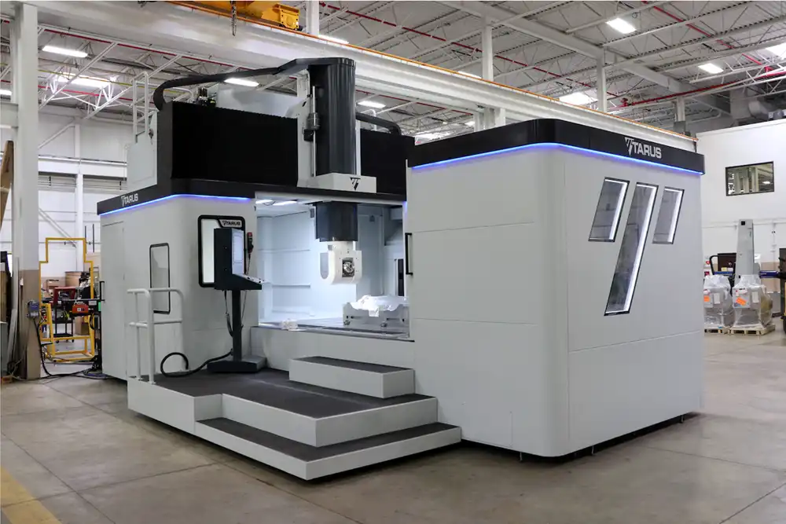

PMT-5 Bridge Mill Platform (Moving Table)
Select Head Configuration:
1. Introduction
The PMT-5 Fork Head utilizes standard AC kinematics (A-axis rotates about X, C-axis about Z). It is optimized for continuous simultaneous 5-axis aerospace milling. Exclusive Klartext Programming: All toolpaths generated for this machine must strictly use the .H file extension and be output in Heidenhain conversational Klartext. ISO/G-Code is not to be used, as Klartext allows for easier mid-program restarts and console edits.
| Machine Configuration | Details |
|---|---|
| Type | Vertical Fork Head (X-Y-Z-A-C) |
| Kinematics | Right-Hand Rule Compliant |
| A-Axis | Rotary around X-axis (Head Tilt) |
| C-Axis | Rotary around Z-axis (Head Spin) |

2. Coordinate Systems (Part vs. Machine)
X+ tool move physically shifts the table in the X- direction. Developers: Do NOT flip axis signs in the post-processor. Output standard Cartesian part coordinates and let the Heidenhain kinematic model handle the inversion internally.
Part Coordinate System: All cutting programs default to part coordinates (activated via CYCL DEF 247 PRESETTING or CYCL DEF 7.0 DATUM SHIFT). All XYZ commands are interpreted as absolute positions relative to the active work offset.
The 2-Step Safe Machine Retract (M91)
Moves containing M91 ignore all work offsets and move in absolute machine space. Because Tarus heads are massive, the post-processor must always use a 2-step retract sequence prior to tool changes or end-of-program to guarantee the tool physically clears the part before the rotary axes unwind:
L Z0 R0 FMAX M91: First, retract the Z-axis to machine zero.L A+0 C+0 R0 FMAX M91 M126: Second, unwind the rotary axes safely at machine home.
3. Tool Length & Radius Compensation
The TNC 640 control automatically applies tool length compensation at all times based on the active tool registry.
Delta Values (Mandatory): The TOOL CALL block should explicitly output DL+0 and optionally DR+0. This explicitly creates a zero-baseline allowing the floor operator to enter wear adjustments directly at the control without hard-coded post overrides.
Radius Compensation: The post-processor must explicitly output the tool radius compensation state on all motion blocks:
RL(Radius Left) /RR(Radius Right): Use for standard 2D/2.5D contouring where the control offsets the cutter path.R0(Tool Center): Required for 3D surfacing, simultaneous 5-axis continuous moves, and safe rapid positioning.
4. Look-Ahead Buffer & Format Constraints
The Heidenhain TNC 640 processes with a 1024-block look-ahead. Use linear Klartext (L) moves for point-to-point motion. Avoid outputting unnecessary non-motion blocks (like redundant M-codes) between tight vectors, as this can flush the buffer and cause the machine to stutter during high-speed surfacing.
Format Constraints:
- No N-Numbers: Programs must use sequential block numbers (e.g., 1, 2, 3). Do not use ISO
Nnumbers. - Single Commands: Commands must be distinct blocks. Do not group distinct operational commands on a single line.
- Modal Parameters: While coordinates are modal, the post should output all active linear axes (X, Y, Z) and feed rates (F) on every cutting block to ensure absolute safety. Rotary axes (A, C) should only be output during indexing or continuous 5-axis cuts to prevent file bloat.
5. Dynamics (Cycle 32)
To control surface finish and machine acceleration during complex paths, the post must output the complete 3-line Cycle 32 definition.
- The 1.5x Rule: Tolerance (T) is exactly 1.5 times the CAM Chordal Deviation setting.
- Angular Tolerance (TA): For continuous 5-axis on the Fork head,
TAmust be between 1.5 and 2.0 degrees to prevent the rotary axes from stuttering.
Proper Klartext formatting:
CYCL DEF 32.0 TOLERANCE
CYCL DEF 32.1 T0.0015
CYCL DEF 32.2 HSC-MODE:0 TA1.56. Program Units, BLK FORM & Probing
BEGIN PGM PART INCH). The machine's physical Tool Table must perfectly match this unit base. A mismatch will cause catastrophic dimension scaling.
Header Sizing (BLK FORM): Output a BLK FORM definition at the start of the file to establish the graphical simulator bounding box: BLK FORM 0.1 Z X... Y... Z... and BLK FORM 0.2 X... Y... Z....
Probing Stance: Setup probing utilizes only the Heidenhain supplied canned cycles (TCH PROBE). These are executed manually at the console by the operator. The post-processor should not output automated NC inspection routines.
7. Kinematic Offsets & Limits
To prevent over-travel on large parts, the developer must account for the physical pivot geometry. The PMT-5 Fork Head has a documented Flange Offset of 11.0237 inch (280.0021 mm). This value is handled by the ZinA Transformation within the TNC 640 parameters, mapping the pivot offset distance from the spindle gauge line to the rotational center. Ensure your CAM simulation model reflects this 11.0237" drop to accurately predict Z-axis stroke limits.
8. 3+2 Indexing (6-Step Sequence)
When indexing for 3+2 operations, the post-processor must properly sequence tool tip control and plane locking to prevent collisions.
Always append M126 to the end of rotary moves (e.g.,
L C+90.0 FMAX M126). This forces the machine to take the shortest path to the angle, preventing cables from winding up or the axis taking an inefficient 350-degree path.For the
PLANE SPATIAL command, use STAY instead of TURN. • STAY: Calculates the tilted plane internally without triggering machine motion. This is the safest method for Tarus heads, since the post manually pre-positions the head first to avoid collisions.
• TURN: Automatically rotates the axes. If used after manual pre-positioning, it is redundant and can cause dangerous controller conflicts.
Strict 6-Step Indexing Sequence:
- Retract: Safe clearance backwards along the active tool axis (
M140 MB MAX). - Activate TCPM: Turn on
M128. This temporarily holds the physical tool tip stationary in 3D space while the heavy mechanical head swings into position. - Rotate & Pre-Position: Output rotary angles with
M126(shortest path), then X/Y/Z. - Deactivate TCPM: Turn off
M129. The tool tip is now safely at the correct approach vector, so TCPM must be disabled to allow mathematical plane control to take over. - Lock Plane:
PLANE SPATIAL SPA... SPB... SPC... STAY FMAX SEQ+Q5 TABLE ROT - Engage & Cut: Feed to cutting depth.
9. TCPM Simultaneous (M128 & FUNCTION TCPM)
For full simultaneous 5-axis surfacing, TCPM ensures the control uses the kinematic model to keep the tool tip exactly on the programmed path while rotary axes continuously move. While M128 is the historical standard and perfectly acceptable, the newest Heidenhain TNC 640 standard encourages using FUNCTION TCPM F TCP AXIS POS PATHCTRL AXIS as the modern replacement. Use FUNCTION TCPM if your CAM software natively supports it.
Crucial: Deactivate TCPM (M129 or FUNCTION RESET TCPM) before issuing standard 3+2 indexing commands or M91 home retracts.
10. Feed Control (M116 & FZ)
Standard feed rates are output as F (inch/min or mm/min). For specific high-performance toolpaths, the control also supports FZ (Feed per tooth) if configured in the CAM.
M116 calculates rotary feed rates relative to the tool tip's distance from the pivot center, rather than raw degrees per minute. This is mandatory for all multi-axis paths to prevent severe velocity drops during compound angles.
Use
FN 0: (Function 0: Assign) to map major feed rates to Q-Parameters in the program header (e.g., FN 0: Q1 =+300.0 ; RAPID FEED, FN 0: Q2 =+100.0 ; XY-FEED). Then, call these parameters in your motion blocks (e.g., L X+5.0 FQ2). This allows the floor operator to globally tune feeds directly at the console without hunting down individual F commands buried deep in the surfacing code.
11. Axis Selection (M138)
Include M138 A C in the program header. This command explicitly defines the physical rotary axes used in the kinematic model, preventing the control from calculating paths for virtual or unequipped axes.
12. Transformations & Arc Formatting
Your post must support Heidenhain coordinate transformations for aerospace part patterning:
- Cycle 7: Datum Shift (shifting the origin temporarily).
- Cycle 8: Mirroring (mirroring a toolpath across an axis).
- Cycle 10: Rotation (rotating the XY plane around the current datum).
Arc Interpolation: When generating circular interpolation, Circle Center (CC X... Y...) coordinates are Absolute by default based on the active datum.
Resetting the Plane: Always output PLANE RESET STAY at the end of a program or immediately before a tool change. This safely resets the coordinate system to the standard machine XYZ orientation without physically moving the massive head, ensuring the next operation starts from a clean, un-tilted kinematic state.
13. Machining Cycles & Klartext Continuations
The post must output standard 200-series cycles using Klartext formatting. Use the tilde (~) character for block continuation. When executing the cycle, use M99 at the exact end of a positioning block (e.g., L X-1.096 Y-1.892 R0 FMAX M99).
- Cycle 200 (Drilling): Ensure all depth and dwell parameters are accounted for to prevent control alarms.
CYCL DEF 200 DRILLING ~
Q200=+0.1 ;SET-UP CLEARANCE ~
Q201=-1.5 ;DEPTH ~
Q206=+10 ;FEED RATE ~
Q202=+0.25 ;PLUNGING DEPTH ~
Q210=+0 ;DWELL TOP ~
Q203=+0 ;SURFACE ~
Q204=+2.0 ;2ND SET-UP ~
Q211=+0 ;DWELL DEPTH - Cycle 207 (Rigid Tapping): Use the modernized
NEWsyntax for advanced spindle syncing. Imperial pitch is defined as a decimal (e.g., 1/32 pitch = 0.0312).
CYCL DEF 207 RIGID TAPPING NEW ~
Q200=+0.1 ;SET-UP CLEARANCE ~
Q201=-1.0 ;DEPTH OF THREAD ~
Q239=+0.0312 ;PITCH (1/32) ~
Q203=+0 ;SURFACE COORDINATE ~
Q204=+2.0 ;2ND SET-UP CLEARANCE
14. Output Structure Example
0 BEGIN PGM PMT_FORK INCH
1 ; Header Comments / Date / User
2 BLK FORM 0.1 Z X-10.0 Y-10.0 Z-5.0
3 BLK FORM 0.2 X+10.0 Y+10.0 Z+0.0
4 FN 0: Q1 =+150.0 ; XY FEED
5 FN 0: Q2 =+50.0 ; Z FEED
6 CYCL DEF 247 PRESETTING ~
Q339=+1 ;PRESET NUMBER
7 PLANE RESET STAY
8 M140 MB MAX ; Safe Retract (Move Backwards MAX)
9 TOOL CALL 123 Z S5000 DL+0 DR+0
10 M3 ; Spindle ON
11 CYCL DEF 32.0 TOLERANCE
12 CYCL DEF 32.1 T0.0015
13 CYCL DEF 32.2 HSC-MODE:0 TA1.5
14 M128 ; ACTIVATE TCPM FOR SAFE ROTATION
15 L A+10.0 C+45.0 R0 FMAX M126
16 M129 ; DEACTIVATE TCPM
17 PLANE SPATIAL SPA+10.0 SPB+0.0 SPC+45.0 STAY SEQ+ TABLE ROT
18 L X+5.0 Y+5.0 Z-1.0 R0 FQ1
19 M140 MB MAX
20 L Z0 R0 FMAX M91 ; 2-Step Safe Machine Home
21 L A+0 C+0 R0 FMAX M91 M126
22 PLANE RESET STAY
23 M30
24 END PGM PMT_FORK INCH15. Reference Tables
Available M-Functions
| M-Code | Description |
|---|---|
M00 | Program Stop (Safe Halt) |
M03/M04 | Spindle ON (CW/CCW) |
M05 | Spindle Stop |
M07/M08 | Coolant (High Pressure/Flood) |
M09 | Coolant OFF |
M30 | Program End & Rewind |
M44/M64 | A Axis Unclamp / Clamp (Tarus Specific) |
M45/M65 | C Axis Unclamp / Clamp (Tarus Specific) |
M50/M51 | Chip Conveyor OFF / ON |
M91 | Machine Coordinate Move |
M99 | Execute Cycle Call |
M116 | Rotary Axis Feed Calculation |
M126/M127 | Shortest Path Traverse ON/OFF |
M128/M129 | TCPM ON/OFF |
M138 | Axis Selection (e.g., M138 A C) |
M140 MB MAX | Retract Along Tool Axis |
Available Cycle Calls
| Cycle | Description |
|---|---|
Cycle 7 | Datum Shift |
Cycle 8 | Mirroring |
Cycle 10 | Rotation |
Cycle 32 | Tolerance & Dynamics |
Cycle 200 | Standard Drilling |
Cycle 207 | Rigid Tapping |
Cycle 241 | Single-Lip Deep Hole Drilling |
Cycle 247 | Presetting (Work Offset) |
PLANE SPATIAL | 3+2 Tilted Indexing |
TCH PROBE | Controller Canned Probing |